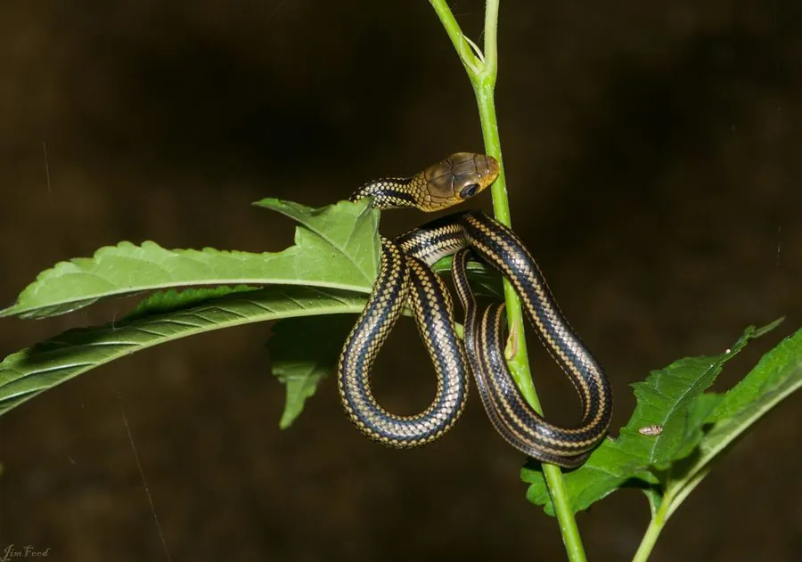

爬行动物 · 动物界
乌梢蛇 Ptyas dhumnades

中国常见的大型无毒蛇，体色青灰、行动迅速，善于捕食鼠类和蛙类，是农田中重要的灭鼠益蛇，具有重要生态价值。
- 分类
- 门脊索动物门纲爬行纲目有鳞目科游蛇科属鼠蛇属
- 栖息环境
- 农田、水沟、灌丛、林缘与村舍附近
- 地理分布
- 中国大部分地区，除西部干旱区外均有分布
- 保护级别
- IUCN 无危（LC）；中国未列入国家重点保护名录
物种志
乌梢蛇体长 1.5–2 米，个别可达 2.5 米，身体细长而结实，头部较长，吻端钝；成体背面呈青灰、灰褐或橄榄褐色，背脊两侧有两条黑色纵纹，纵纹在体后段逐渐模糊，腹部灰白或淡黄。幼体花纹更明显，体色偏绿。
它分布于中国大部分地区，栖息于农田、水沟、灌丛、林缘和村舍附近，行动迅速，善攀爬也能游泳，白天活动，捕食鼠类、蛙类、鱼类和昆虫。它是卵生蛇类，雌蛇每次产卵 6–14 枚，孵化期约 50–70 天。乌梢蛇无毒，是农田中重要的灭鼠益蛇，其干制品在中药中也有使用；由于被大量捕捉，野生数量有所下降，野外遇到时不必害怕，更不应随意捕杀。
形态与习性
- 食性鼠类、蛙类、鱼类和昆虫
- 体长1.5–2 m，最长约 2.5 m
- 寿命约 10–15 年
- 繁殖卵生，6–14 枚，孵化 50–70 天
- 活动节律昼行性，行动迅速
- 毒性无毒，对人无害
趣味知识
- 乌梢蛇行动十分迅速，受惊时能快速钻入草丛或水中。
- 它背脊两侧的两条黑色纵纹是重要的识别特征。
- 乌梢蛇是农田里的灭鼠能手，干制品在中药中也有使用。